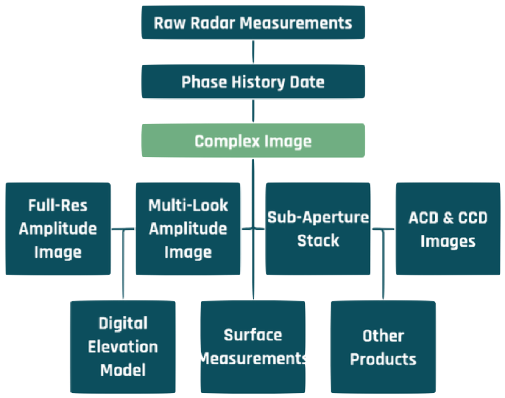
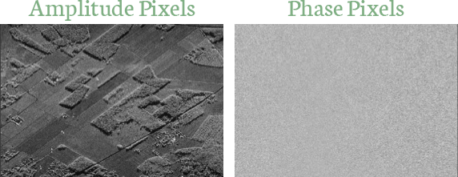

SAR Processing Overview
The SAR Processing Flow and Its Products
SAR image generation begins with the emission of thousands of coherent pulses and the decomposition of each echo into raw measurements of time, amplitude and phase. The first part of the processing flow is called Phase History Processing because it accounts for the changes over time of the phase values of each scatterer. Phase history data are focused into the azimuth and range components of each resolution cell to produce an image product called a “complex image” (Figure 15).

The Complex Image
Info
By the way, you will hear SAR engineers refer to the two parameters of a complex image as “In-Phase” and “Quadrature”. These are just another way to describe the complex values.
The left image in Figure 16 is a ICEYE amplitude image of agricultural fields. In this image each pixel has a brightness value assigned to it. This is what many people consider to be the base SAR product, but this is really only half of the full image. The SAR processor calculates the average phase value for each pixel as well. The matching “phase image” of that same scene is on the right in the figure. The combination of these two images is called a complex image, in which every pixel has amplitude and phase values. We use the term “complex” because the pixels are described by a mathematical construct called a complex number, where every number has two components.

Of course, phase data are not useful for direct human interpretation. And while they may look like random noise, phase pixels are a unique and valuable aspect of SAR imaging. Phase data can be used to manipulate the synthetic aperture in different ways to extract useful information that is not available from amplitude images. Moreover, changes in the phase measurements of the same object on different images can be used to detect small surface structure characteristics. In the next section we’ll discuss how we can use phase data to refine images and create other products.
SAR Products Derived from Complex Data
Amplitude Images
Info
You should also be aware that an engineering calculation called “detection” converts in-phase and quadrature values to amplitude values. Engineers often refer to SAR amplitude images as “detected” images.
An amplitude image is certainly the most common SAR product, but you need to appreciate that this image is produced for human viewing and analysis. It is not the core image product. Amplitude images do not contain any phase information. Furthermore, the version of the amplitude image used for human viewing is not a direct copy of the amplitude values in a complex image. This is because radar sensors record an enormous span of brightness levels for each complex pixel. The maximum intensity of amplitude in a complex image is usually more than 100,000 times (50 dB) the minimum intensity, and for the best-quality images with bright targets, it is much greater. ICEYE images are produced with 16 bits of dynamic range per pixel (65536 gray levels) but even this is not sufficient to record the full dynamic range of SAR.
As valuable as they are, amplitude images have no phase data and they lose much of the dynamic range of complex pixels. You can imagine the growing potential for computers and algorithms to process those complex pixels in ways the human visual system cannot.
Multi-look Amplitude Images
One way in which we can use complex data is to produce different versions of the seemingly simple amplitude image. One common form of an amplitude image, for example, is called a multi-look image. Consider that azimuth and range resolution are handled independently. One is based on the length of the synthetic aperture and the other is based on the signal bandwidth, and sometimes these are quite different in magnitude. It is common for azimuth resolution to be collected at a higher fidelity than range resolution. If a full-resolution image were produced from such data it would look compressed in range. To view the image in a more natural aspect we need to “square the pixels” so that the range and azimuth scales are the same.
Info
Speckle is a grainy, noise-like feature of SAR images. It is caused by the coherent nature of SAR illumination. The reflections from small scatterers within a resolution cell combine constructively and destructively to brighten or darken the returns.
This is done by manipulating the synthetic aperture into smaller sub-apertures and then combining them. The sub-apertures are called “looks” and they each produce an image with lower azimuth resolution. This may sound disappointing, but when these individual sub-aperture images are combined, they form a multi-look image in which the noisy effect of speckle is reduced. Complex images are stored at full-resolution and are called single-look complex (SLC) images. Amplitude images are typically multi-looked in azimuth using two to 12 sub-apertures. If range resolution exceeds azimuth resolution a similar multi-look process can be applied in the range dimension.
Sub-aperture Stack or Video Image
Suppose we take the aperture splitting further and create six or seven segments to produce multiple sub-aperture images. One advantage of this sub-aperture stack is that it can indicate glints that are bright in only a portion of the full aperture. This signature might be washed out on the full-resolution image by the bulk of the aperture in which there was no glinting, but it can be very noticeable in one of the low-resolution sub-apertures. Glints tend to be important signatures because they are usually caused by human-made features. We could even loop the stack like a short movie, or SAR video image, to look for such glints and moving objects. This product works best for long spotlight exposures of ten seconds or more.
Amplitude and Coherent Change Images
Perhaps the most useful SAR products are the amplitude and coherent change images (ACI, CCI). Two or more images of the same site are collected at different times to detect scene changes. For ACD only the brightness values are compared, while CCD uses phase data.
In order for change detection to work, the images have to be collected from nearly the same location in space with similar illumination geometries. For ACD the two images can be overlaid in the complementary colors (eg red and cyan). In this way, features with similar backscatters will be gray, but features with backscatters that changed during the imaging period will appear in one of the two colors. It is conventional for the first image to be displayed in red and the second in cyan. If something on the ground changes between the two collections you will see whichever color signature is dominant.
A mnemonic is used to help interpret ACD products: “Red is fled. Blue is new”. That is, a red signature indicates a feature that was present on the first image but left the scene prior to the second image, and a blue signature indicates a feature that appears only on the second image. This mnemonic is an easy way to help remember the order of the images, but appreciate that the second image is actually cyan, not blue. The intentional sloppiness of the mnemonic is acceptable here because verbal precision would ruin the rhyme.
In contrast to amplitude change detection, CCD compares the phase values of two nearly identical images taken at different times. CCD is far more sensitive to changes because it is based on phase differences rather than pixel brightness differences and, as we know, phase is measured to within a small fraction of a wavelength. The collection constraints to ensure image-to-image coherence are tighter for CCD than ACD.
When the collection parameters are nearly identical, the phase values are also nearly identical, and any changes are due to backscatter differences at a scale of less than one wavelength. It is typical for CCD images to display pixels where phase is consistent in white and the pixels where the phase has changed are dark. These are areas where the two images have “decorrelated”, or lost phase consistency, due to some subtle change in the scene.
Other Multi-image SAR Products
The amplitude and phase data of SAR images can be combined to produce other useful products that are too numerous to describe in detail in this overview. These include digital elevation models derived from pixel brightness values or phase data, millimeter-level surface motion measurements derived phase comparisons of sets of matching images, and automated detections of ships, oil spills and other features. Once constellations of small SARs are established it will be possible to monitor any site in the world with large stacks of exactly matching images whose consistent signatures are linked to known ground features. These images could be collected within hours of each other and they will be the basis of intelligent site monitoring services that will not only detect changes, but which will also say what has changed and how it has changed.